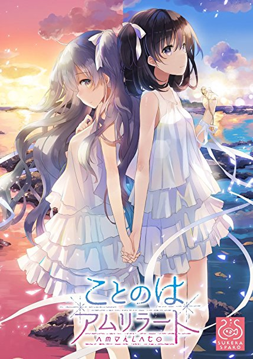

みなさん、Bonantagon！（ボーナンターゴン） 新ブランド・SukeraSparo（スケラスパーロ）より2017年8月25日発売予定の純百合アドベンチャー『ことのはアムリラート』。
同作で高遠凜 役・長妻樹里さんと、ルカ 役・内田秀さんのおふたりがパーソナリティを務める『ラジオことのはアムリラート〜ユリ百合ユリアーモ〜』が2017年8月1日（火）インターネットラジオステーション＜音泉＞にて配信されます！
本日は、その収録現場へお邪魔してその様子をレポートし、合わせておふたりのインタビューをご紹介したいと思います。それでは、お邪魔しま〜す！
※この記事はSukeraSparo（スケラスパーロ）から寄稿された原稿をもとに構成しています

「ラジオことのはアムリラート〜ユリ百合ユリアーモ〜 収録現場レポートだよ♡の巻」
7月某日、都内スタジオにて収録は行われました。まずは収録打ち合わせからスタートです。
が、長妻さんも内田さんも早くにスタジオ入りされており、内田さんのオーストラリアで暮らしていた頃のお話にみんな興味津々。打ち合わせが始まった頃にはおふたりはもちろんのこと、スタッフさん一同、座組としてすっかりうちとけて和やかな雰囲気で進められていきました。
おふたりで楽しそうにメールを選んだり、ミニドラマの確認をされたりと、準備は万端！ 内田さんは「ルカの髪型にしてきたんです（ハート）」と、身も心もすっかりルカとして臨まれたようでした。
そして、いよいよ本番スタート！ オープニングから、長妻さんのリードに内田さんがぴったりとついていく、おふたりでの番組が初めてとは思えないほど息のあったトークが繰り広げられました。
ユリアーモ（エスペラントを基にしたゲーム内の異世界語）をお勉強するコーナーでは、帰国子女の内田さんが長妻さんを引っ張る一幕も。この時ばかりはお姉さんの長妻さんもタジタジです……。スタッフブースも笑いのたえない、楽しいコーナーになりました。
そして、たくさんお勉強をした後はちょっと休憩を挟みます。しかし、休憩時間も始終楽しそうにおしゃべりをしているおふたり。まさに凜とルカがそこにいるような仲睦まじい様子でした。
その後、番組後半部分の収録が始まり、凜の大好きな鯛焼きをお互いのために作るということで、その具材をかけたゲームコーナーがスタート。次々とミニゲームをこなしていくお二人ですが、珍プレー好プレーの続出！ 凜とルカから少し離れた、長妻さんと内田さんの新たな魅力が鯛焼きの餡子のようにたっぷりとつまったコーナーとなりました。
おふたりがどんな具材を使って、どんな鯛焼きを作ったのか……？ ぜひ、番組を聴いてご確認くださいね。
そして、あっという間にエンディング。鯛焼きの甘い匂いに包まれたブース内で「次回もまたあったら嬉しいな」とつぶやく長妻さんに頷き微笑む内田さん。ちょっぴり名残惜しそうに終了していきました。
ここではその直後の余韻が残ったおふたりのお話を伺うことができました。そちらの様子も合わせてご紹介したいと思います！ では、長妻さん、内田さん、よろしくお願いします！